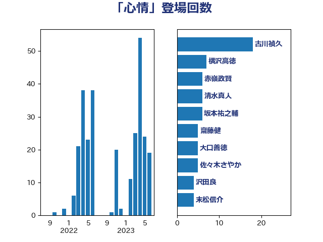

単語「心情」

| 古川禎久 | 自由民主党 | 18 回 |
| 横沢高徳 | 立憲民主党 | 7 回 |
| 赤嶺政賢 | 日本共産党 | 6 回 |
| 清水真人 | 自由民主党 | 6 回 |
| 坂本祐之輔 | 立憲民主党 | 6 回 |
| 齋藤健 | 自由民主党 | 5 回 |
| 大口善徳 | 公明党 | 5 回 |
| 佐々木さやか | 公明党 | 5 回 |
| 沢田良 | 日本維新の会 | 4 回 |
| 末松信介 | 自由民主党 | 4 回 |
| 五十嵐清 | 自由民主党 | 4 回 |
| 鬼木誠 | 立憲民主党 | 3 回 |
| 高良鉄美 | 無所属 | 3 回 |
| 永岡桂子 | 自由民主党 | 3 回 |
| 末松義規 | 立憲民主党 | 3 回 |
| 平林晃 | 公明党 | 3 回 |
| 岸田文雄 | 自由民主党 | 3 回 |
| 伊藤孝江 | 公明党 | 3 回 |
| 上田清司 | 国民民主党 | 3 回 |
| 高橋千鶴子 | 日本共産党 | 2 回 |
| 辻清人 | 自由民主党 | 2 回 |
| 谷公一 | 自由民主党 | 2 回 |
| 藤岡隆雄 | 立憲民主党 | 2 回 |
| 葉梨康弘 | 自由民主党 | 2 回 |
| 紙智子 | 日本共産党 | 2 回 |
| 石川大我 | 立憲民主党 | 2 回 |
| 石井正弘 | 自由民主党 | 2 回 |
| 松沢成文 | 日本維新の会 | 2 回 |
| 本田太郎 | 自由民主党 | 2 回 |
| 日下正喜 | 公明党 | 2 回 |
| 嘉田由紀子 | 無所属 | 2 回 |
| 加藤勝信 | 自由民主党 | 2 回 |
| 鈴木馨祐 | 自由民主党 | 1 回 |
| 鈴木俊一 | 自由民主党 | 1 回 |
| 野間健 | 立憲民主党 | 1 回 |
| 道下大樹 | 立憲民主党 | 1 回 |
| 進藤金日子 | 自由民主党 | 1 回 |
| 赤木正幸 | 日本維新の会 | 1 回 |
| 谷合正明 | 公明党 | 1 回 |
| 西村智奈美 | 立憲民主党 | 1 回 |
| 西村康稔 | 自由民主党 | 1 回 |
| 藤田文武 | 日本維新の会 | 1 回 |
| 美延映夫 | 日本維新の会 | 1 回 |
| 石橋林太郎 | 自由民主党 | 1 回 |
| 石井苗子 | 日本維新の会 | 1 回 |
| 田村貴昭 | 日本共産党 | 1 回 |
| 浅野哲 | 国民民主党 | 1 回 |
| 櫛渕万里 | れいわ新選組 | 1 回 |
| 梅谷守 | 立憲民主党 | 1 回 |
| 梅村聡 | 日本維新の会 | 1 回 |
| 梅村みずほ | 日本維新の会 | 1 回 |
| 柴愼一 | 立憲民主党 | 1 回 |
| 林芳正 | 自由民主党 | 1 回 |
| 松野博一 | 自由民主党 | 1 回 |
| 杉久武 | 公明党 | 1 回 |
| 斉藤鉄夫 | 公明党 | 1 回 |
| 庄子賢一 | 公明党 | 1 回 |
| 平山佐知子 | 無所属 | 1 回 |
| 岡本あき子 | 立憲民主党 | 1 回 |
| 山田賢司 | 自由民主党 | 1 回 |
| 山下雄平 | 自由民主党 | 1 回 |
| 小沼巧 | 立憲民主党 | 1 回 |
| 小沢雅仁 | 立憲民主党 | 1 回 |
| 小池晃 | 日本共産党 | 1 回 |
| 寺田学 | 立憲民主党 | 1 回 |
| 宮本徹 | 日本共産党 | 1 回 |
| 安江伸夫 | 公明党 | 1 回 |
| 守島正 | 日本維新の会 | 1 回 |
| 吉良州司 | 無所属 | 1 回 |
| 吉田久美子 | 公明党 | 1 回 |
| 吉田とも代 | 日本維新の会 | 1 回 |
| 吉川沙織 | 立憲民主党 | 1 回 |
| 加田裕之 | 自由民主党 | 1 回 |
| 倉林明子 | 日本共産党 | 1 回 |
| 仁比聡平 | 日本共産党 | 1 回 |
| 井野俊郎 | 自由民主党 | 1 回 |
| 三木圭恵 | 日本維新の会 | 1 回 |